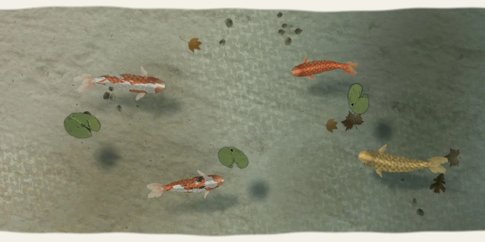

Nishikigoi
The brocade carp
The first koi were food. In the mountain villages above Ojiya, in Niigata, the snow comes in November and lies three and four metres deep until April, and for the winter the farmers kept black carp in the ponds that fed their terraced rice, to eat when the roads were shut.

Now and then one of those carp came out of the egg with a patch of red on it, or a white belly, and somebody kept it instead of eating it, and paired it the next spring with another odd one. That went on quietly for most of the nineteenth century, village to village, in ponds no bigger than a room. By the 1880s there were fish white as rice paper with red laid over the back like lacquer, the kohaku. Fish with spots of ink on the white and the red came in the 1910s, and after the war plain gold ones that take the light like a coin. They were shown in Tokyo in 1914, and after that every garden that could afford a pond wanted them. The villages still breed them, and still bring the fish indoors for the winter.
A koi grows slowly and lives a long time. Thirty or forty years is ordinary for a fish that is looked after, and the old ones grow as long as a man's arm and become tame enough to take food from the hand. The oldest on record was a scarlet fish called Hanako, kept in a pond in the hills of Gifu. When she died in 1977 a scientist took two of her scales and counted the rings laid down in them, a ring for each winter, like the rings of a tree, and made her two hundred and twenty-six years old. Nobody has been able to check it. But she had been passed down through a family for as long as anyone remembered, and fed by each of them in turn.
In China the carp swims up the Yellow River every spring to the gorge called the Dragon Gate, where the water comes down over the rocks so hard that almost none can climb it. The one that leaps the falls turns into a dragon. Scholars sitting the imperial examinations were said to be leaping the Dragon Gate, and in Japan the carp became the fish of boys and of courage: on the fifth of May the families with sons fly carp of cloth and paper from poles, and the wind fills their mouths so that they swim in the air. Painters drew them climbing waterfalls for a thousand years. In a garden pond they do nothing so dramatic. They cruise along the edge and back through the middle, hang in the shade at noon, and come up slowly, as if they had all the time in the world, when a crumb lands on the water.